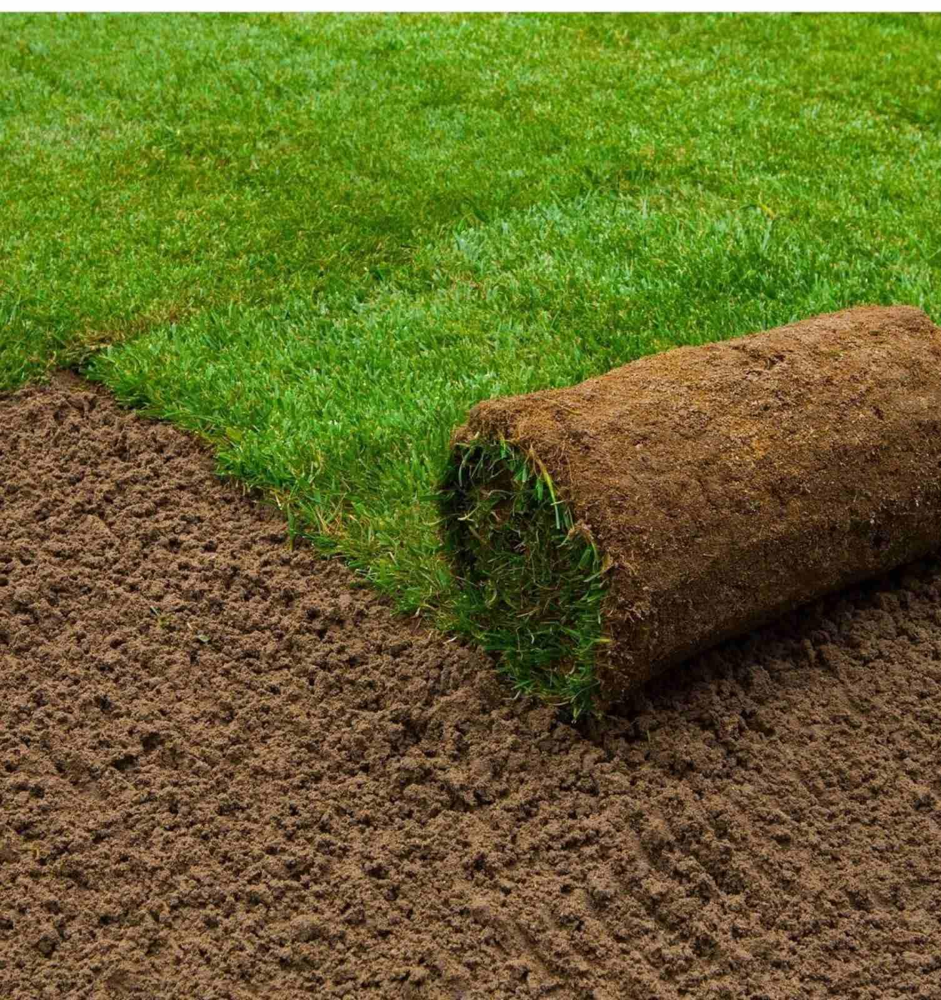
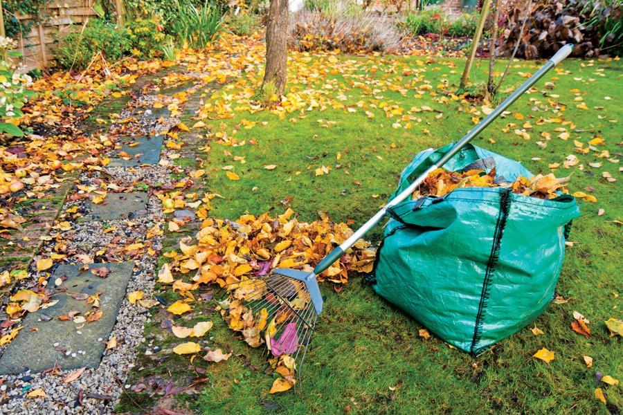
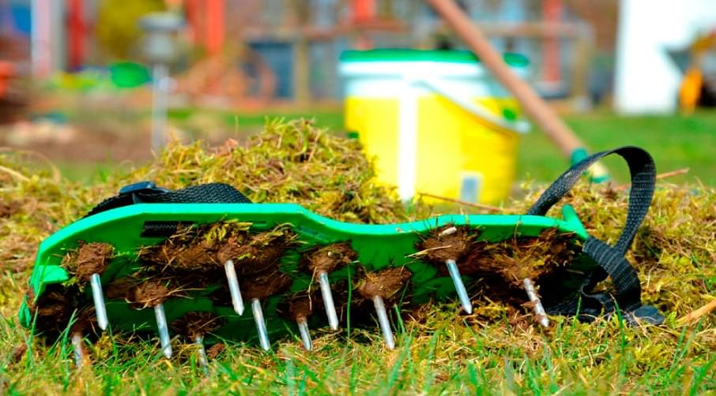
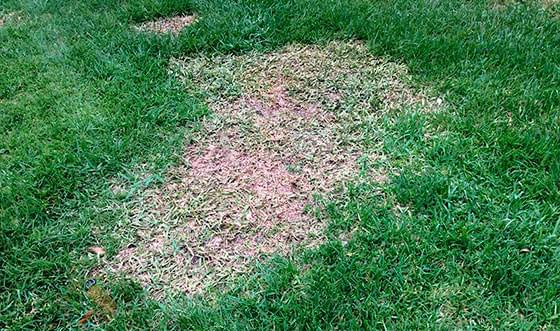

Озеленення та благоустрій.
Комплексне обслуговування.
Догляд за кімнатними рослинами.
Догляд за газоном навесні

Газон є одним з найважливіших елементів озеленення на приватній ділянці. Правильно організована ділянка землі з покривом з соковитої зеленої трави - це фон, який чітко підкреслює такі елементи ландшафтного дизайну, як квітники, композиції з дерев та чагарників, водойми, малі архітектурні форми. Після тривалої зими газон потребує особливої уваги і обов`язкового дотримання технології догляду. Це забезпечить нормальний ріст і розвиток красивої доглянутої газонної трави протягом усього сезону.
Основні газонні роботи навесні:
- вичісування газону від старої та відмерлої трави (скарифікація);
- весняне підживлення газону (внесення добрив);
- боротьба із захворюваннями та бур`янами;
- обов`язкова аерація ґрунту (проколювання);
- відновлення пошкодженого «полотна» газону (підсів трави);
- перша стрижка газону.
Укріплення схилів георешіткою
Озеленення та благоустрій.
Комплексне обслуговування.
Догляд за кімнатними рослинами.
Підготовка газону до зими

Прибирання
З настанням листопада регулярно проводять прибирання органіки з газону. Листовий опад злежується і перегниває, позбавляючи траву сонячного світла і стабільного газообміну. Випріваючи під листям, що гниє, ділянки газону навесні доведеться пересівати. Крім того, проводять підрізування повстяного шару спеціальними граблями.
Повсть перешкоджає:
- зростанню кореневої системи;
- провітрюванню трави;
- проникненню вологи й поживних речовин в ґрунт.

Аерація
У перший рік газонна трава ще не встигає щільно обплести корінням земляний ком. Однак вже з другого року слід проводити аерацію ґрунту.
Вона необхідна для:
- дренування ґрунту, відведення вологи від прикореневої зони в найглибші шари;
- поліпшення газообміну, надходження кисню до коренів.

Підживлення
До настання холодів газонну траву обов'язково підгодовують фосфорно-калійними складами. Важливо виключити внесення азоту — він стимулює повторний ріст рослин, знижує їх зимостійкість. Калій значно підвищує морозостійкість трави, її стійкість до коливань температури й вологості. Газон менш схильний до захворювань. Фосфор зміцнює кореневу систему, готує її до зимівлі.
Секрети правильної підгодівлі газону:
- Добрива вносять тільки на добре зволожений ґрунт;
- Після підгодівлі газонну траву необхідно ретельно полити;
- Не слід розсипати підгодівлі під час тривалих посух.

Досів
Якщо в літній період були допущені помилки в догляді, то на газоні можуть утворитися лисини. «Підлікувати» його найкраще восени. Завдяки великій кількості опадів і помірній температурі повітря, створюються сприятливі умови для швидкого проростання й активної вегетації трави.
Для підсіву рекомендується використовувати ту ж травосуміш. Вона буде деякий час відставати в рості від основного газону, однак утворює однорідний травостій. При використанні регенераційно-відновлювальної суміші травостій може злегка відрізнятися по відтінку і швидкості росту. Однак така трава швидко затягує лисини. Досів здійснюють не менше ніж за 1-1,5 місяці до настання морозів. За цей час трава встигає надійно вкоренитися і набратися сил для майбутньої зимівлі.

Мульчування
Для регіонів з малосніжними зимами рекомендовано передзимове мульчування газону.
Як мульчу використовують:
- суміш торфу і піску — для глинистих ґрунтів;
- псуміш торфу і родючої землі — для піщаного ґрунту.
Ділянку покривають підхожою сумішшю шаром у 2-3 см.
Мульчування дозволяє:
- вирівняти нерівності, що утворилися за сезон;
- зменшити випаровування вологи;
- захистити рослини від морозів;
- підвищити поживність ґрунту;
- підвищити стійкість трави до несприятливих умов.